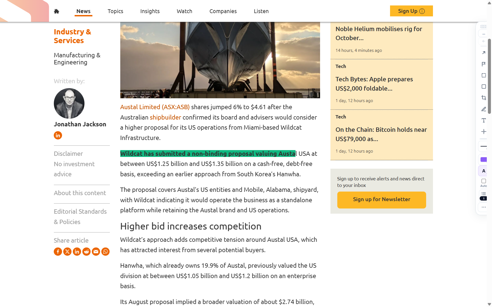

欢迎与快速上手
Sagitnote（天箭批注）是一款浏览器扩展：在任意网页上直接高亮文字、绘图、写批注，并把所有标注收纳成可搜索、可同步、可分享的个人知识库。
Sagitnote 是什么？
Sagitnote 在你正在阅读的网页之上叠加一层"标注层"。所有操作都在原页面完成，无需跳出页面。
- 文本高亮 — 六种颜色标记任意句子，支持填充、边框、下划线、波浪线、字色五种样式，并可附加批注。
- 绘图工具 — 箭头、矩形框、自由线条、旗帜、文字批注，钉在页面任意位置。
- 截图 — 把整个页面或选定区域截成图片批注。
- 元素标记 — 把按钮、图片、链接等整个元素收藏为标记。
- 标注管理器 — 所有标注自动汇入个人库，支持文件夹、搜索、编辑与导出。
- 云同步与分享 — 多设备保持一致，还能把标注分享给他人（免费版受每日新建限额约束）。
安装扩展
-
安装扩展
推荐方式：从官方商店一键安装——Chrome 应用商店或 Edge 加载项，安装后随商店自动更新。也可以从 Sagitnote 官网首页的安装按钮进入。
也可以手动加载官网直装包：下载 Sagitnote 安装包（.zip）并解压到一个长期保留的文件夹。然后打开
chrome://extensions（Edge 为edge://extensions），开启开发者模式，点击加载已解压的扩展程序，选择解压出的文件夹。 -
固定到工具栏
点击浏览器工具栏的拼图图标，把 Sagitnote 固定住，方便随时使用。
-
打开任意网页
访问你想标注的页面，页面上会出现浮动控制面板——那就是 Sagitnote 的工具箱。可以拖到任意位置，不用时可以最小化。
-
登录（推荐，也可以先不登）
不注册也能用：直接开始标注，内容保存在本机（本地模式）。不过云同步、分享、快照等功能需要账号——注册免费（邮箱验证码即可），登录一次后账号会保存在本浏览器，脱机同样可用。
Sagitnote 适用于普通网页以及浏览器打开的本地文件；浏览器自身页面（如新标签页）不运行标注。
第一次标注
最快上手方式：高亮一句话，并给它加上批注。
-
选中文字
像复制文字一样，在页面上拖选任意一句话。
-
选一个颜色
选区旁会弹出颜色选择条，点一个颜色圆点，高亮立即生效。想换高亮样式（填充、下划线、波浪线等），先在面板的样式组里选好，再划选文字。
-
添加批注
高亮完成后，点选择条里亮起的笔按钮即可写批注、加标签——还能选择批注是悬停显示还是常显。之后要修改，点击高亮本身，或打开浏览（带数字的按钮）点该标注的编辑（铅笔）。你的评论会一直挂在这句话上。

在控制面板打开自动后，每次划选文字都会按当前颜色自动高亮——通读长文章做标记时特别顺手。
浮动控制面板
控制面板是 Sagitnote 的工具箱，悬浮在页面之上，包含：
- 工具按钮 — 箭头、旗帜、矩形框、图片矩形、页面截图、自由线条、文字批注、元素标记。
- 样式控制 — 线宽、颜色与当前工具的样式。
- 浏览 — 打开当前页面的标注列表。
- 💬 弹窗开关 — 一键关闭页面上所有已打开的批注卡片。
- 更多（⋯） — 整页批注、收藏、导入导出、标注管理、快照、分享、设置与帮助。
拖动面板左侧把手可移动位置，阅读时可最小化。每个工具的详细用法见网页标注工具。
含内嵌区域的页面
有些页面会在内部嵌入其他文档（iframe）。遇到这种页面时，Sagitnote 会先问你要标注哪块区域：每个可标注区域的中央都会显示一个「✎ 选择此区域」按钮，点一下你要标注的区域即可。对大多数页面来说，选择正文所在区域就对了。

数据存在哪里
- 本地优先 — 标注首先保存在本机浏览器里，不依赖网络，离线可用。不登录也能标注（本地模式）；登录后数据再备份到你的账号。
- 云同步 — 登录后点击立即同步，或交给自动同步：标注备份到账号并在多设备间保持一致（免费版与 Pro 均可用）。
- 随时导出 — 在更多菜单或标注管理器中，可把当前页面或整个标注库导出为文件备份。